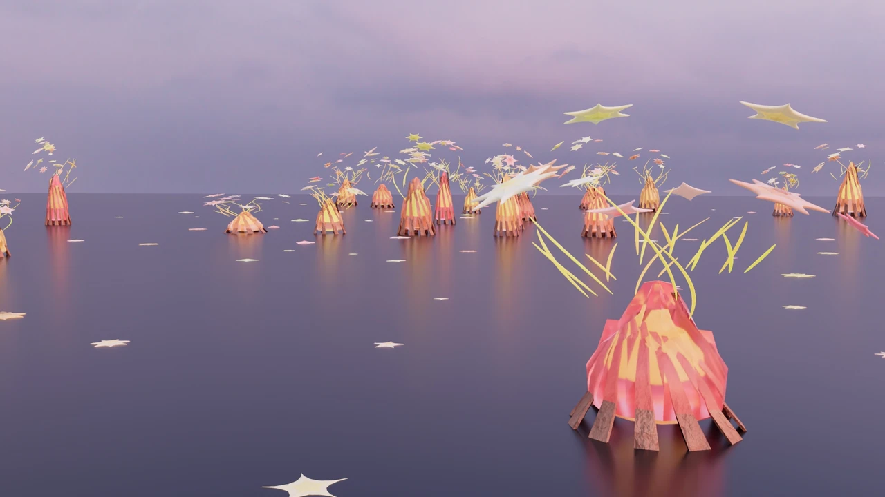
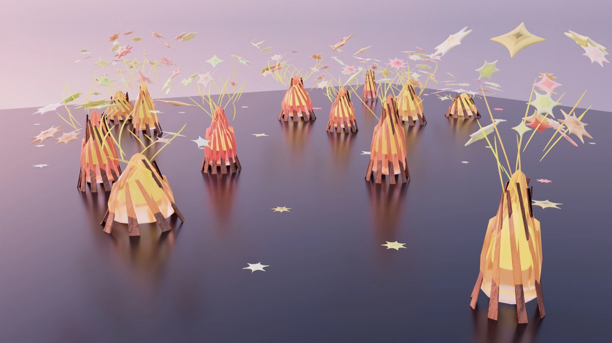
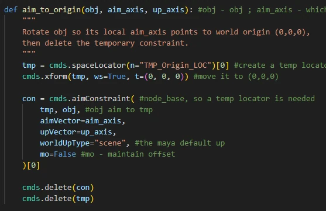
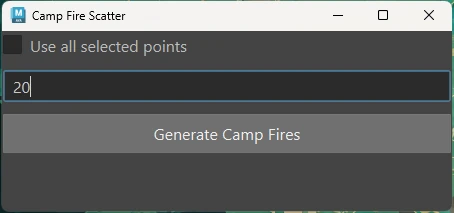
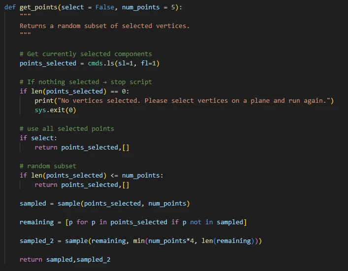

Case Study · March 2026
Ember Field
An artist-facing Maya tool that samples mesh vertices and procedurally generates modular campfires, sparks, and secondary elements with controlled variation.
RoleTool Development
ToolsPython · Maya
DateMarch 2026

Vertex-based scattering
The tool samples all or a user-defined subset of selected mesh vertices. Separate point sets control campfires and denser secondary spark distributions.

Modular procedural campfires
Each asset combines randomized firewood, layered flame geometry, emission shaders, sparks, stems, and stars. Quantity, scale, color, and twist are varied within controlled ranges.
Consistent spatial direction
A custom aim_to_origin function creates a temporary locator and aim constraint, applies the resulting rotation, then cleans the helper nodes. Generated elements consistently radiate toward the scene center.

A safer Maya GUI workflow
The Camp Fire Scatter interface exposes density and selection behavior. Callback and return-value errors were resolved by accepting Maya's UI arguments and ensuring get_points always returns a consistent tuple.

